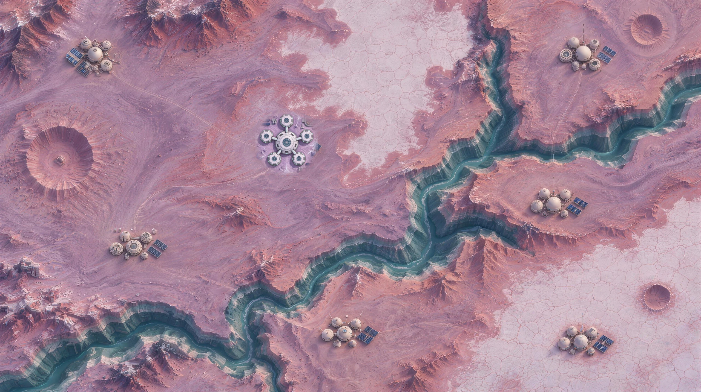
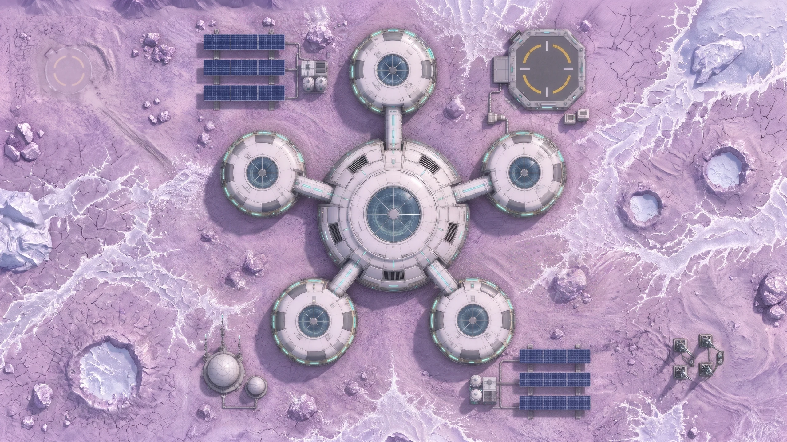
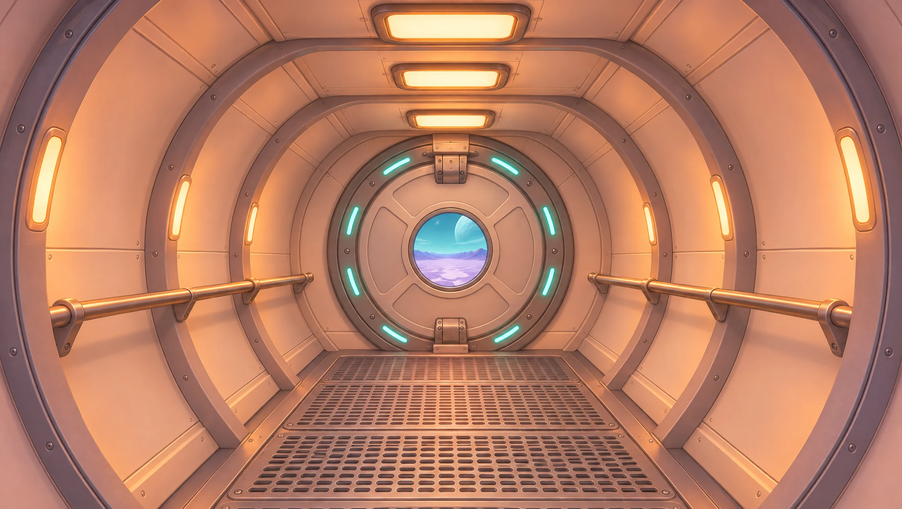
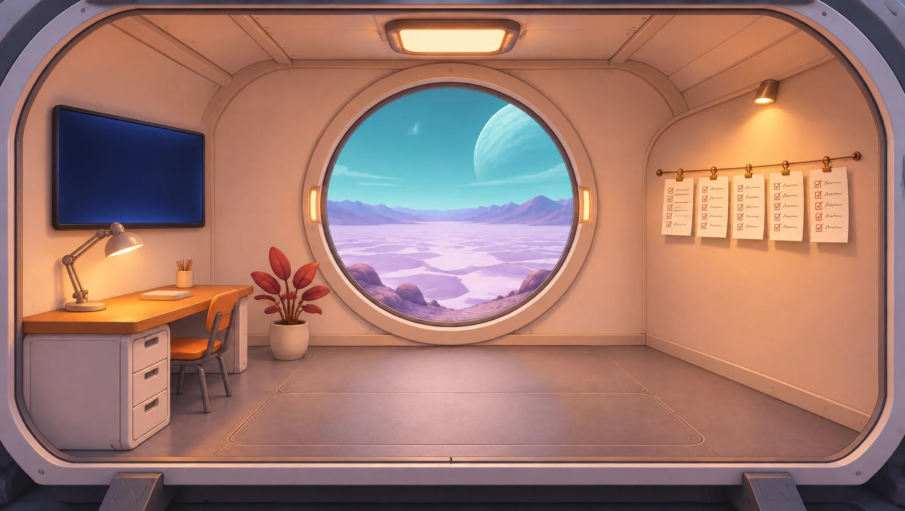

Nabu / Planet surface

Planet Nabu
Seven crews, on seven ships, at the same time. Click your base to descend, or the others to read their journal.
/ Lyra Base

/ / Connecting tube

Bedroom
/ / Module
